[TOC]
- Title: Planning With Diffusion for Flexible Behaviour Synthesis
- Author: Michael Janner et. al.
- Publish Year: 21 Dec 2022
- Review Date: Mon, Jan 30, 2023
Summary of paper
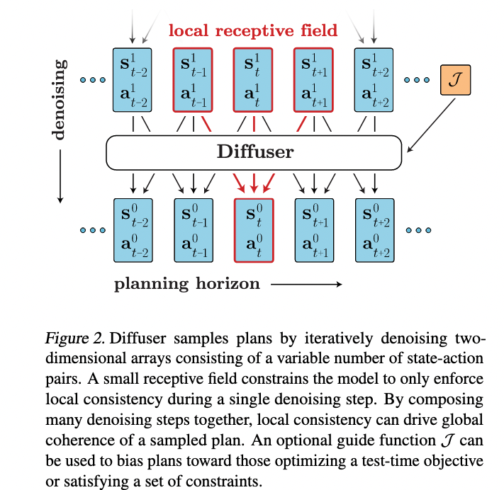
Motivation
- use the diffusion model to learn the dynamics
- tight coupling of the modelling and planning
- our goal is to break this abstraction barrier by designing a model and planning algorithm that are trained alongside one another, resulting in a non-autoregressive trajectory-level model for which sampling and planning are nearly identical.
Some key terms
ideal model-based RL
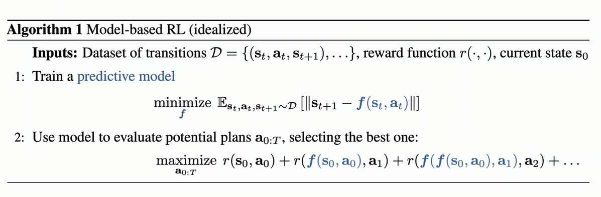
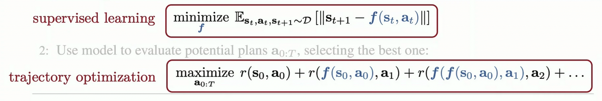
Why neural nets + trajectory optimisation is a headache
- Long-horizon predictions are unreliable
- Optimizing for reward with neural net models produces adversarial examples in trajectory spaces
A generative model of trajectories
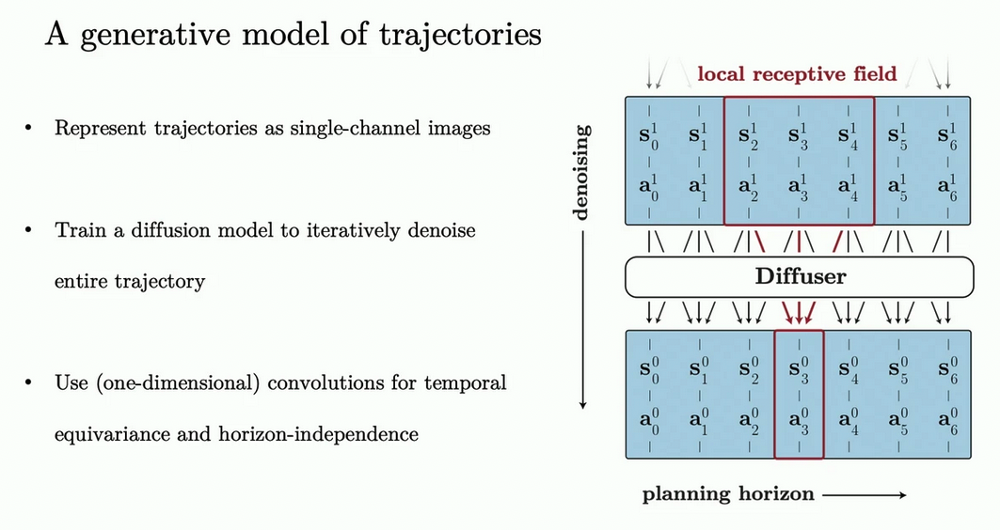
What is autoregressive model
- it predicts future values based on past values.
Non-autoregressive prediction
- prediction is non-autoregressive: entire trajectory is predicted simultaneously
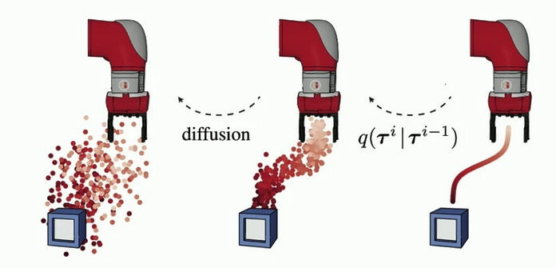
Sampling from diffuser
- sampling occurs by iteratively refining randomly-initialised trajectories
Flexible behaviour synthesis through distribution composition
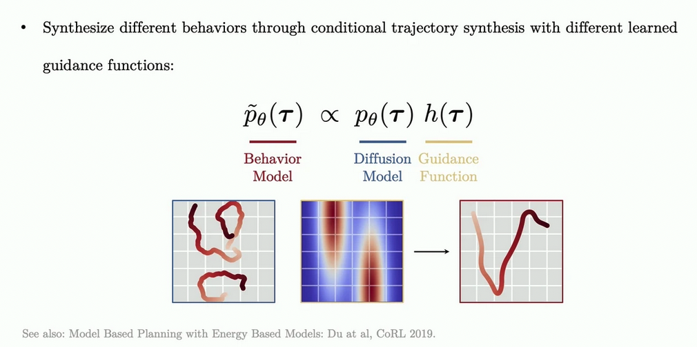
- guidance functions transforms an unconditional trajectory model into a conditional policy for diverse tasks.
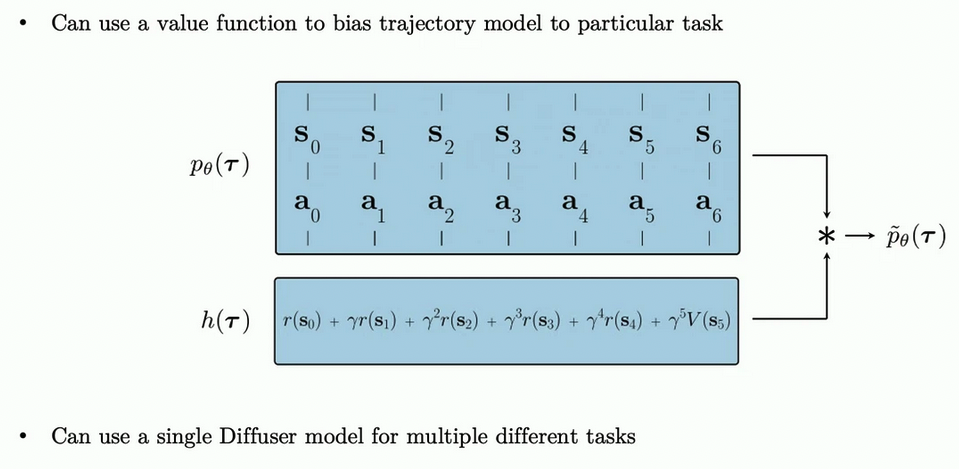
Goal planning through inpainting
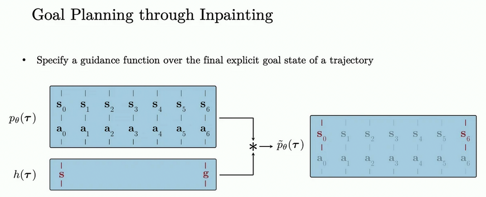
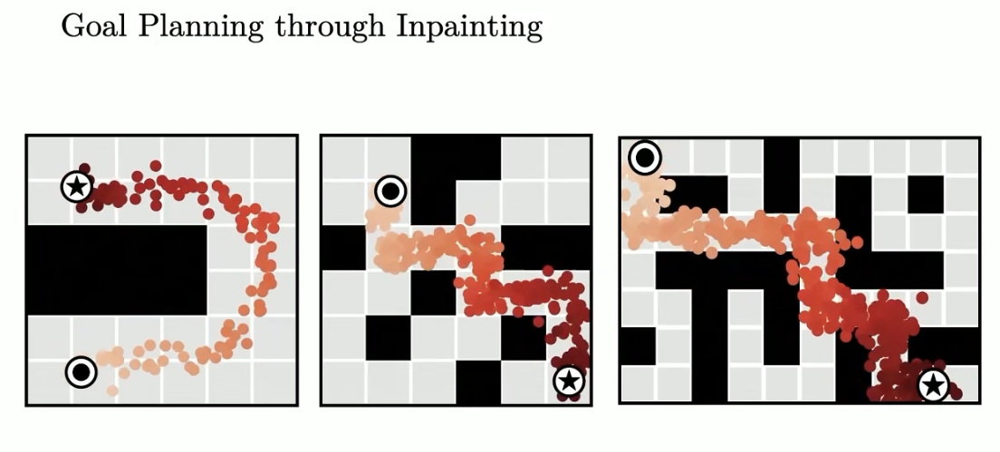
Tight coupling between modelling and planning
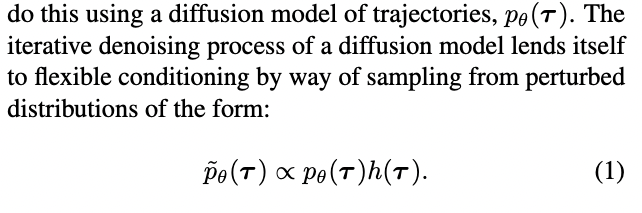
- it requires finding trajectories that are both physically realistic under $p_\theta(\tau)$ and high-reward (or constraint-satisfying) under $h(\tau)$
- because the dynamics information is separated from the perturbation distribution $h(\tau)$, a single diffusion model $p_\theta(\tau)$ may be reused for multiple tasks in the same environment.
Algorithm
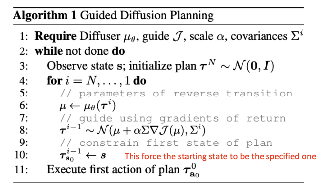
Goal-conditioned RL as Inpainting
- some planning problems are more naturally posed as constraint satisfaction than reward maximization.
- In practice, this may be implemented by sampling from the unperturbed reverse process $\tau^{i-1} \sim p_\theta(\tau^{i-1} | \tau^i)$ and replacing the sampled values with conditioning values $c_t$ after all diffusion timesteps $i \in {0,1,…,N}$
Task compositionality
- while diffuser contains information about both environment dynamics and behaviours, it is independent of reward function. Because the model acts as a prior over possible futures, planning can be guided by comparatively lightweight perturbation functions $h(\tau)$ (or even combinations of multiple perturbations)
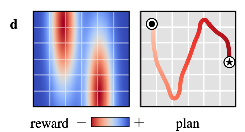